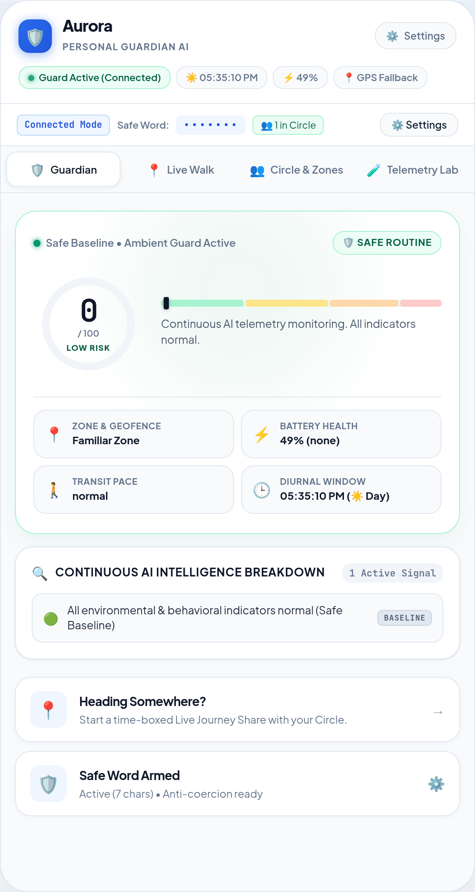
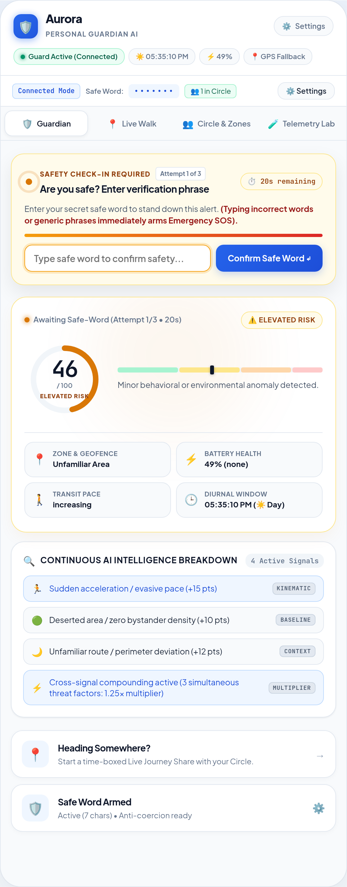
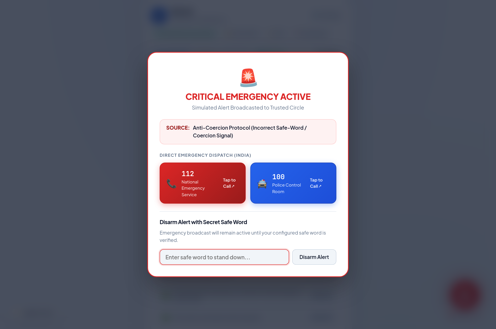

A personal safety system that acts before you have to ask.
Continuous multi-signal behavioral telemetry • Anti-coercion fail-closed check-in • 100% on-device privacy
Cross-Factor Multipliers:
• 2 factors: 1.15x
• 3 factors: 1.25x
• 4+ factors: 1.35x compounding
Asymmetric Decay:
• Instant jump: Threat bursts escalate immediately.
• Gradual decay: 0.5 pts/sec recovery to prevent premature stand-down.
Scenario: Night Evasive Sprint
• Night Diurnal Baseline (+15)
• Unfamiliar Zone (+12)
• Deserted Area (+10)
• Accelerating Pace (+15)
• 4-Factor Multiplier (1.35x)



Because in a real crisis, you should never have to remember to ask for help.